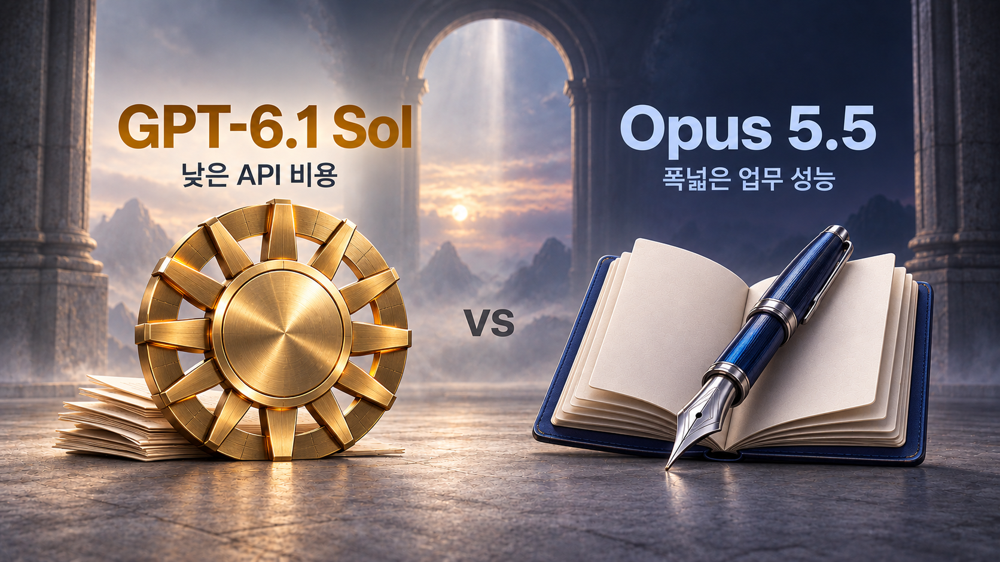

안녕하세요. dev.log입니다.
OpenAI가 새 GPT 모델인 GPT-6.1 Sol을 공개했습니다. 기존 Sol을 개선한 모델로, 글쓰기와 자료 분석부터 코딩, 도구를 활용한 업무까지 맡길 수 있습니다. 새 모델이 나온 만큼, 이전보다 얼마나 좋아졌고 지금 쓰는 클로드와 비교하면 어느 정도인지 궁금해집니다.
Sol은 문서 분석과 업무 자동화에서 성능과 비용을 함께 따져 볼 만한 모델입니다. 이전 Sol보다 성능이 높아졌고, 일부 평가에서는 상위 모델인 Astra에 가까워졌습니다. 다만 Opus와의 우열은 작업 종류와 추론 설정에 따라 달라지므로, 낮은 가격만으로 교체를 결정하기는 어렵습니다.

GPT-6.1 Sol의 특징과 이용 방법
OpenAI는 2026년 9월 29일 DevDay에 GPT-6.1 Sol을 발표했습니다. 기존 GPT-6 Sol을 개선하면서 코딩·컴퓨터 조작·전문 업무에서 더 비싼 GPT-6 Astra에 가까운 성능을 목표로 한 모델입니다. 출시 안내에 따르면 Plus·Pro·Business·Enterprise·Edu 사용자는 ChatGPT Work와 Codex의 모델 선택 화면에서 Sol 6.1을 선택할 수 있습니다. 일반 Chat에는 아직 제공되지 않으며, API에서는 gpt-6.1-sol이라는 식별자로 호출합니다. OpenAI 출시 안내
클로드와 비교할 때는 Opus 5.5를 중심으로 보는 것이 좋겠습니다. Anthropic이 9월 22일 출시한 모델로, 코드 작업과 문서 작성 등 대부분의 업무에서 Fable 5.1 수준의 성능을 제공한다고 설명합니다. OpenAI의 Sol 출시 자료에도 Opus와 직접 비교한 결과가 있습니다. 여기에 OpenAI의 상위 모델인 Astra와 Claude의 다른 고성능 모델인 Fable 5.1을 함께 놓으면, 새 Sol의 수준과 가격을 더 넓게 가늠할 수 있습니다. Anthropic Opus 5.5 발표
공식 비교표로 보는 Sol 6.1의 성능
새 Sol이 어느 정도 달라졌는지 보려면, 이전 Sol과 Astra를 함께 놓는 것이 가장 분명합니다. 아래 표는 OpenAI 출시 페이지의 그래프에서 읽은 점수를 모은 것입니다. 오류율을 제외한 다섯 평가는 최대 추론 설정인 max를 기준으로 맞췄습니다. 오류율은 매우 높은 추론 설정인 xhigh를 따로 표시했습니다. 추론 설정은 답을 만들 때 모델이 사용할 자원의 양을 조절하는 옵션이며, 제조사가 다르면 같은 이름이라도 실제 계산량은 다를 수 있습니다. OpenAI 공식 평가 그래프
모바일에서는 표를 좌우로 밀어 모든 모델을 확인하세요.
| 평가 · 추론 설정 | Sol 6.1 | 이전 Sol | Astra | Opus 5.5 |
|---|---|---|---|---|
| 코드 수정 · DeepSWE v1.1 · max | 71.9% | 68.8% | 73.2% | 미제공 |
| PDF 분석 · GDP.pdf · max | 31.0% | 24.8% | 31.0% | 26.2% |
| 업무 자동화 · AutomationBench 1.0.6 · max | 36.1% | 32.0% | 41.4% | 42.5% |
| 컴퓨터 조작 · OSWorld 2.0 · max | 71.4% | 64.4% | 73.5% | 미제공 |
| 과학 연구 · Terminal-Bench Science 0.1 · max | 57.0% | 27.6% | 68.1% | 63.3% |
| 사실 오류율 · 어려운 질문 · xhigh · 낮을수록 좋음 | 4.1% | 4.5% | 4.0% | 미제공 |
앞의 다섯 행은 점수가 높을수록 좋고, 마지막 오류율은 낮을수록 좋습니다. ‘미제공’은 해당 그래프에 Opus 결과가 없다는 뜻입니다. PDF·자동화·과학 연구의 Opus 결과에는 다른 모델로 작업을 넘기는 fallback(대체 처리)이 포함되어 있습니다. 각 평가는 과제와 채점 방식이 다르므로, 서로 다른 행의 점수를 단순히 평균 내서 모델의 종합 능력으로 읽어서는 안 됩니다.
이전 Sol과 비교하면 모든 항목이 개선됐으며, 코딩과 컴퓨터 조작에서는 Astra와의 차이가 작아졌습니다. 반면 과학 연구와 최대 설정의 자동화에는 더 큰 차이가 남아 있습니다. 또 max가 항상 가장 높은 점수를 보장하지는 않습니다. 추론 설정을 바꾼 결과까지 봐야 새 모델의 장점이 드러납니다.
Opus와 비교한 문서 분석·자동화
GDP.pdf는 PDF에 들어 있는 표·차트·작은 주석을 읽고 질문에 답하는 평가입니다. 최대 추론 설정에서는 다음과 같은 결과가 나왔습니다. 점수와 함께 표시한 과제당 비용은 이 평가에서 실제로 사용된 토큰과 작업 방식까지 반영한 금액입니다.
PDF 분석: Sol·Opus·Astra 비교
점수 (%) · 0–100 · 높을수록 좋음
GDP.pdf · 최대 추론 설정 (max)
과제당 $0.42
과제당 $1.55
과제당 $2.08
이 조건에서 Sol은 Astra와 같은 점수를 기록하면서 과제당 비용은 약 5분의 1이었습니다. Opus와 비교해도 점수는 더 높고 비용은 낮았습니다. OpenAI는 이 PDF 평가에서 조사한 추론 설정 전반에 걸쳐 Sol이 Opus를 앞섰다고 설명합니다. 다만 특정 PDF 과제의 결과이므로 글쓰기나 코딩 성능까지 이 순위로 판단할 수는 없습니다.
여러 업무용 도구를 연결해 일을 끝내는 AutomationBench 1.0.6에서는 설정에 따라 결과가 달라집니다. 아래 그래프는 중간 설정인 medium과 최대 설정인 max를 나란히 보여 줍니다.
업무 자동화: 추론 설정에 따라 달라지는 순위
점수 (%) · 0–100 · 높을수록 좋음
중간 추론 설정 (medium)
과제당 $0.19
과제당 $0.65
과제당 $1.27
최대 추론 설정 (max)
과제당 $0.30
과제당 $1.44
과제당 $1.73
medium에서는 Sol이 Opus를 2.2%p 앞서지만, max에서는 Opus가 Sol보다 6.4%p 높습니다. %p는 두 비율의 차이를 나타내는 퍼센트포인트입니다. 따라서 “Sol이 자동화에서 Opus보다 좋다”는 설명은 중간 설정에 한정해야 합니다. 최대 설정에서 더 높은 점수를 원하는지, 낮은 비용으로 반복 실행하려는지에 따라 선택이 달라집니다.
두 설정 사이의 변화도 확인할 수 있도록 Sol과 Opus의 전체 결과를 정리했습니다. 각 칸은 점수 / 과제당 비용입니다.
| 추론 설정 | Sol 6.1 | Opus 5.5 · fallback 포함 |
|---|---|---|
| low · 낮음 | 24.7% / $0.16 | 24.2% / $0.51 |
| medium · 중간 | 31.7% / $0.19 | 29.5% / $0.65 |
| high · 높음 | 33.2% / $0.23 | 33.0% / $0.71 |
| xhigh · 매우 높음 | 35.5% / $0.25 | 35.8% / $0.89 |
| max · 최대 | 36.1% / $0.30 | 42.5% / $1.44 |
같은 자동화 그래프에 있는 Fable 5.1은 max에서 31.4%, 과제당 $2.45로 표시됩니다. 다만 약 40%의 과제에서 발생한 fallback 비용이 빠져 있으므로, 이 금액을 전체 작업 비용으로 받아들여 네 모델의 비용 순위를 매기기는 어렵습니다. OpenAI 평가 조건
Astra에 얼마나 가까워졌을까?
코딩을 비교한 DeepSWE v1.1은 실제 코드베이스에서 긴 소프트웨어 개발 과제를 수행하는 평가입니다. 이 그래프에는 Opus가 없으므로, 이전 Sol과 Astra를 비교 대상으로 삼았습니다. 아래 칸도 점수와 과제당 비용을 함께 보여 줍니다.
모바일에서는 표를 좌우로 밀어 비용까지 확인하세요.
| 추론 설정 | Sol 6.1 | 이전 Sol | Astra |
|---|---|---|---|
| low | 64.4% / $0.17 | 37.2% / $0.16 | 67.0% / $1.60 |
| medium | 73.0% / $0.42 | 56.6% / $0.38 | 72.8% / $3.08 |
| high | 75.2% / $0.65 | 65.3% / $0.64 | 73.2% / $3.92 |
| xhigh | 71.9% / $0.79 | 66.6% / $1.00 | 74.1% / $4.43 |
| max | 71.9% / $1.57 | 68.8% / $2.74 | 73.2% / $7.50 |
Sol 6.1은 이 평가에서 high 설정일 때 가장 높은 점수를 기록했습니다. medium부터는 Astra와 비슷한 점수에 도달했고, 설정별 비용도 크게 낮았습니다. 반면 high에서 max로 올렸을 때 비용은 늘었지만 점수는 떨어졌습니다. 더 오래 추론하게 한다고 모든 코드 작업의 결과가 좋아지는 것은 아니라는 점도 함께 봐야 합니다. OpenAI 코딩 평가
Opus 출시 자료에 있는 코딩 비교표는 새 Sol 6.1이 아닌 GPT-5.6 Sol을 대상으로 합니다. 두 제조사의 표를 이어 붙여 Sol 6.1과 Opus의 코딩 순위를 만들 수는 없습니다. Anthropic 비교표
컴퓨터 화면을 보고 조작하는 OSWorld 2.0의 max 결과에서는, Sol의 과제당 비용이 $1.27이고 Astra는 $9.44였습니다. 앞의 공식 비교표처럼 점수 차이가 비교적 작은 상황에서 비용은 약 7분의 1로 낮아진 셈입니다. 여기서 점수는 부분적으로 수행한 작업에도 점수를 주는 partial reward 방식이므로, 전체 작업을 완전히 끝낸 비율과는 구분해야 합니다.
반면 Terminal-Bench Science 0.1의 max 결과에서는 Sol이 이전 버전보다 크게 개선됐어도 Opus와 Astra에는 미치지 못했습니다. 과제당 비용은 Sol $5.47, Opus $23.21, Astra $23.80이었습니다. OpenAI도 가장 어려운 과학 연구에는 여전히 Astra를 권장합니다. 일상적인 코드 수정과 고난도 연구를 같은 기준으로 묶어 선택하기 어려운 이유입니다.
사실 오류율도 개선됐지만, “Sol의 모든 답변 중 4.1%가 틀린다”는 뜻은 아닙니다. 이 평가는 사용자가 오류를 보고했던 어려운 질문을 비식별화해 만든 특정 문제 묶음입니다. xhigh에서 Astra와 거의 같은 오류율을 얻었으며 과제당 비용은 Sol $0.10, Astra $0.60이었습니다. 일반적인 질문 전체의 오류율로 확대해서 해석하면 안 됩니다. OpenAI 컴퓨터 사용·과학·사실성 평가
독립 종합 평가에서 본 네 모델의 수준
앞의 결과는 코딩·문서 분석·자동화 같은 개별 업무를 보여 줍니다. 여러 분야를 함께 평가하면 순위는 어떻게 달라질까요? 독립 평가 기관인 Artificial Analysis의 Intelligence Index v4.3.2는 문서 업무·코딩·추론 등을 포함한 10개 평가를 묶은 종합 지수입니다. 점수가 높을수록 이 평가 묶음에서 성능이 좋다는 뜻이며, 업무 성공률이나 정답률을 나타내는 백분율과는 다릅니다. 평가 구성
아래 표는 2026년 9월 30일 리더보드에서 확인한 정수 표시값입니다. medium은 중간, max는 최대 추론 설정을 뜻합니다. Claude 결과에는 리더보드에 표시된 fallback 구성이 포함되어 있습니다. 제조사마다 추론 설정을 구현하는 방식이 달라서, 설정 이름이 같다고 실제 계산량까지 같지는 않습니다. Artificial Analysis 리더보드
모바일에서는 표를 좌우로 밀어 모든 열을 확인하세요.
| 모델 | medium 지수 | max 지수 | max 과제당 비용 |
|---|---|---|---|
| GPT-6.1 Sol | 48 | 52 | $0.72 |
| Claude Opus 5.5 | 51 | 58 | $5.98 |
| GPT-6 Astra | 50 | 53 | $3.26 |
| Claude Fable 5.1 | 49 | 53 | $7.63 |
종합 지수에서는 Opus가 가장 높았습니다. Sol은 Astra와 Fable에 가까운 점수를 훨씬 낮은 비용으로 얻었지만, Opus의 최대 추론 성능과는 차이가 남아 있습니다. 표의 과제당 비용은 이 평가 묶음의 평균값이므로, 실제 문서 한 건이나 코드 수정 한 번에 들 요금은 별도로 계산해야 합니다.
같은 처리량으로 비교한 API 비용
평가에 나온 과제당 비용은 모델이 사용한 토큰 수와 작업 방식까지 반영한 값입니다. 기본 요금 자체가 얼마나 다른지 보려면, 같은 양을 처리한다고 가정해 비교하는 편이 이해하기 쉽습니다.
API는 프로그램에서 모델을 호출하고 처리한 양만큼 요금을 내는 방식입니다. 그 처리량을 세는 단위가 토큰이며, 입력은 모델에 보낸 자료와 지시, 출력은 모델이 생성한 내용에 해당합니다. 아래 단가는 100만 토큰 기준으로, GPT는 Standard, Claude는 일반 API 요금을 사용했습니다. Sol 요금, Opus 요금, Astra 요금, Fable 요금
마지막 열은 입력 10만 토큰과 출력 1만 토큰을 처리한다고 가정한 계산입니다. 입력 단가에 0.1을, 출력 단가에 0.01을 곱해 더했으며, 캐시·도구 비용·재시도·모드별 할증은 제외했습니다. 실제 모델을 실행해 측정한 비용은 아닙니다.
모바일에서는 표를 좌우로 밀어 모든 열을 확인하세요.
| 모델 | 입력 / 100만 토큰 | 출력 / 100만 토큰 | 가정한 처리량의 비용 |
|---|---|---|---|
| GPT-6.1 Sol | $2 | $10 | $0.30 |
| Claude Opus 5.5 | $4 | $20 | $0.60 |
| GPT-6 Astra | $10 | $50 | $1.50 |
| Claude Fable 5.1 | $10 | $50 | $1.50 |
같은 처리량이라면 Sol의 기본 요금은 Opus의 절반입니다. 다만 같은 일을 맡겨도 모델마다 사용하는 토큰 수가 다르므로, 실제 작업 비용이 항상 절반이 되는 것은 아닙니다.
같은 자료를 반복해서 보내는 경우에는 이전에 처리한 입력을 재사용하는 캐시가 비용을 줄여 줍니다. Sol의 캐시 입력은 100만 토큰당 $0.10, Opus의 캐시 읽기는 $0.20이며, 캐시를 처음 저장하는 비용과 적용 조건은 별도로 확인해야 합니다. 긴 자료를 한 번에 보내는 경우에도 주의할 조건이 있습니다. Sol은 입력이 27만 2천 토큰을 넘으면 전체 요청의 입력·캐시 단가가 2배, 출력 단가가 1.5배로 올라갑니다. 모델이 받아들일 수 있는 길이의 자료라도 기본 요금보다 더 비싸질 수 있다는 뜻입니다. Sol 상세 요금, Opus 상세 요금
이 요금표는 ChatGPT나 Claude의 월 구독료와는 별개입니다. 구독을 바꾸려는 경우에는 API 단가보다 실제 이용할 서비스의 사용 한도와 필요한 기능을 먼저 확인하는 것이 좋겠습니다.
클로드 대신 쓸지 판단하는 방법
문서 분석이나 업무 자동화를 API로 반복한다면, Sol의 낮은 단가가 실제로 비용을 줄여 주는지 시험해 볼 만합니다. 반면 어려운 문제의 해결 가능성을 더 중요하게 본다면 종합 평가에서 앞선 Opus도 함께 비교할 이유가 있습니다. Fable 5.1을 이미 사용 중이라면, 더 비싼 요금만큼 현재 작업에서 더 나은 결과를 얻고 있는지 확인해 보세요.
직접 비교할 때는 평소 자주 맡기는 작업 한 건을 두 모델에 같은 조건으로 요청하는 것부터 시작하면 됩니다. 문서라면 표의 수치와 각주를 제대로 반영했는지, 코드라면 요구한 동작을 구현하면서 기존 기능도 유지했는지를 확인하세요. 첫 답변만 보고 결정하기보다는, 필요한 수정을 모두 마칠 때까지 걸린 시간과 총비용을 비교하는 편이 실제 선택에 도움이 됩니다. 지금 쓰는 Opus의 결과에 만족한다면 유지하되, 수정이 많았던 작업부터 Sol에도 맡겨 보는 것이 좋겠습니다.